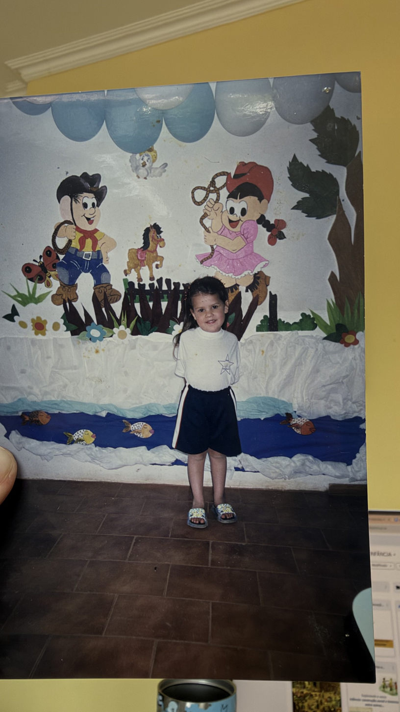
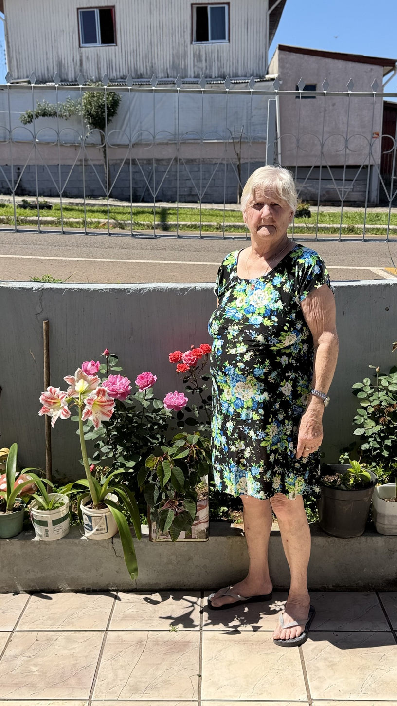

UNIVERSIDADE DO ESTADO DE SANTA CATARINA • PPGE / FAED
Apêndice A — Guia Visual da Pesquisa
Concepções de adolescência e desenvolvimento humano na produção acadêmica brasileira (2018–2026): mediações históricas, sociais e escolares da Psicologia e da Educação.
21 pranchas com esquemas relacionais, descrições independentes e avisos de leitura. Fonte-base: dissertação de qualificação, versão 11 (2026).
Problema, teoria, corpus e matriz articulados, com remissões às seções da dissertação.
Acessibilidade cognitiva
Cores acompanhadas de títulos e formas; sínteses sem substituir a fundamentação.
Acessibilidade digital
Texto selecionável, leitura linear, descrições textuais, avisos expansíveis e navegação por teclado.
Nota de integridade: o roteiro original foi atualizado a partir da versão 11: matriz em três dimensões, cinco movimentos analíticos, números do levantamento original e do subconjunto temporal diferenciados, resultados exploratórios não generalizáveis.
Para a qualificação · roteiro de navegação
Defender a proposta, não repetir uma aula
Um percurso breve pelas decisões teórico-metodológicas, pela construção da Matriz Analítica Tripartida e pelos limites do exercício exploratório. Cada ponto abre uma prancha do Guia original.
Este roteiro é um apoio à interlocução com a banca. A sequência pode ser interrompida e retomada conforme as questões dos examinadores. Recomenda-se manter também uma cópia local para eventual falha de conexão.
A pesquisadora e os caminhos da pesquisa
Sobre a autora
Formatura na UDESC — um marco do percurso de formação.Descrição acessível da fotografia
Retrato da autora durante a formatura: mulher sorrindo, com cabelos escuros, capelo e beca pretos sobre roupa clara, segurando um canudo preto identificado com a sigla UDESC. Ao fundo aparecem faixas verdes e vermelhas.
Taynara Xavier Telles
Pedagoga · Professora dos Anos Iniciais · Mestranda em Educação na UDESC
Antes de investigar a adolescência, percorri os caminhos da escola como estudante e professora. As perguntas que hoje orientam minha pesquisa começaram muito antes de receberem um nome acadêmico.
De onde venho
Cresci em Capinzal, no interior de Santa Catarina. No jardim da casa de minha avó, via crianças seguirem para a escola levando flores às professoras; ali comecei a imaginar a docência. Na escola pública, encontrei uma biblioteca que ainda recordo como minúscula e imensa: suas estantes abriram caminhos entre poemas, palavras e perguntas.

Uma fotografia da infância.Descrição acessível da fotografia
Fotografia antiga, em papel, de Taynara criança, em pé diante de um painel colorido. Ela usa camiseta branca, bermuda azul-escura e sandálias. Ao fundo aparecem personagens infantis com temática rural, uma árvore, flores e peixes sobre uma faixa azul.

Minha avó no jardim de sua casa, agosto de 2026.Descrição acessível da fotografia
Fotografia colorida, feita em um dia ensolarado de agosto de 2026. A avó da autora está em pé ao lado de um canteiro com roseiras, lírios e outras plantas em vasos. Usa vestido escuro com flores azuis e verdes. Ao fundo, aparecem um muro baixo, uma grade e construções do outro lado da rua.
Os caminhos da formação
Estudei na escola pública e iniciei uma graduação em Psicologia com bolsa integral do ProUni, percurso posteriormente interrompido. Em Florianópolis, graduei-me em Pedagogia pela Universidade do Estado de Santa Catarina enquanto trabalhava como professora dos quartos e quintos anos do Ensino Fundamental. Hoje curso o mestrado em Educação no PPGE/FAED da UDESC. A experiência docente e a formação universitária, atravessadas por encontros e oportunidades, deram forma a inquietações que se tornaram problemas de pesquisa.
Registro da formatura: a UDESC também faz parte desta história.Descrição acessível da fotografia
Fotografia aproximada da formatura. O enquadramento destaca os olhos da autora sob um capelo preto, com uma faixa clara no centro. Na frente do rosto, ela segura um canudo preto com a inscrição UDESC em letras douradas. O fundo está desfocado.
As perguntas que me movem
Investigo como a produção acadêmica brasileira compreende a adolescência e o desenvolvimento humano, interrogando suas mediações históricas, sociais e escolares. Nessa trajetória, procuro aprofundar meu diálogo com o materialismo histórico-dialético, a Psicologia Histórico-Cultural e a Pedagogia Histórico-Crítica, sem perder de vista as desigualdades que atravessam a escola e as possibilidades de formação humana.
Entre palavras, imagens e memórias
Carrego comigo a lembrança da biblioteca da Escola Municipal Dr. Vilson Pedro Kleinubing e de leituras que me acompanharam desde a infância: Roseana Murray, Pedro Bandeira, Manoel de Barros e Drummond. As memórias do jardim, das professoras e dos livros não explicam sozinhas minha trajetória, mas ajudam a reconhecer as relações e condições que a tornaram possível.
Como nos tornamos quem somos?É uma pergunta que atravessa minha história e que esta pesquisa procura investigar, no plano das concepções científicas, sem oferecer respostas simples ou definitivas.
Texto em primeira pessoa adaptado do prólogo e dos agradecimentos da dissertação de qualificação; não é transcrição literal nem autobiografia independente. Fotografia e gravação com voz da autora dependem de material escolhido ou produzido por ela.
Acesse o texto integral da versão de qualificação de 17/11/2026 por capítulo e página, com opção de leitura em voz sintética e descrições textuais dos esquemas presentes no Guia Visual.
Nota editorial: o texto abaixo foi extraído automaticamente do PDF de qualificação (270 páginas) e não substitui o original diagramado. Notas de rodapé, quadros, referências e a ordem de certos elementos podem necessitar de revisão. A audiodescrição visual disponível corresponde às 21 pranchas deste Guia, não a todas as figuras do PDF.
As descrições independentes já presentes nas 21 pranchas estão reunidas aqui para leitura sequencial ou escuta sintética. Elas não substituem a revisão das figuras, tabelas e gráficos da dissertação completa.
Este leitor utiliza voz sintetizada fornecida pelo próprio navegador, quando disponível. Não há envio de texto nem gravação de voz a servidores por este Guia; o mecanismo de voz do dispositivo pode utilizar serviços do sistema operacional. O último ponto de leitura é armazenado apenas neste navegador, com opção de exclusão.
INTRODUÇÃO — três pranchas
Prancha 1/3 • Guia 1/21 • Remissão: Introdução: formulação do objeto, pp. 20–26
Inquietação originária e delimitação do objeto
A investigação distingue os processos concretos de desenvolvimento das explicações científicas que deles se produzem.
Quatro relações envolvem o núcleo das concepções científicas: corporeidade, organização histórica das idades, produção de conhecimento e escolarização. A pesquisa examina como tais relações são explicadas, e não a experiência adolescente diretamente.
Reconstrução do argumento
O crescimento biológico existe, mas não fixa universalmente o conteúdo social da adolescência.
As formas de nomear e explicar a adolescência são historicamente constituídas.
O objeto específico são as relações explicativas presentes nas produções acadêmicas.
Distinção indispensável
Fenômeno real não é idêntico às concepções formuladas sobre ele.
A historicidade não elimina a materialidade corporal.
A investigação não acompanha diretamente a vida de adolescentes nem avalia práticas escolares.
Abrir aviso explicativo complementar
A literatura utilizada na abertura oferece indícios historicamente situados, não comprovação de uma adolescência universal em outras épocas.
Descrição textual independente
Quatro relações envolvem o núcleo das concepções científicas: corporeidade, organização histórica das idades, produção de conhecimento e escolarização. A pesquisa examina como tais relações são explicadas, e não a experiência adolescente diretamente.
Prancha 2/3 • Guia 2/21 • Remissão: Introdução: problema, objetivos e recorte, pp. 26–31
Conjuntura brasileira, problema e pertinência da escola
O recorte delimita a produção científica; a conjuntura orienta perguntas, sem determinar antecipadamente as explicações dos autores.
O problema conecta o período de 2018 a 2026 às relações explicativas sobre adolescência, desenvolvimento e escola. A conjuntura e as políticas delimitam perguntas possíveis; sua presença efetiva nas produções exige demonstração documental.
Problema investigativo
Identificar as concepções de adolescência e desenvolvimento humano na produção brasileira.
Examinar como são articuladas — ou não — mediações históricas, sociais, escolares e político-educacionais.
Considerar artigos, dissertações e teses dos campos da Educação, Psicologia e áreas pertinentes.
Hipótese aberta ao exame
A concepção não se esgota numa definição ou filiação teórica declarada.
Interessa reconstruir vínculos entre corpo, atividade, condições sociais e escolarização.
O contexto 2018–2026 não pode ser tratado como causa uniforme dos textos examinados.
Abrir aviso explicativo complementar
A defesa da escola pública é um fundamento pedagógico do trabalho, não uma presunção de que todas as produções partilhem a mesma orientação.
Descrição textual independente
O problema conecta o período de 2018 a 2026 às relações explicativas sobre adolescência, desenvolvimento e escola. A conjuntura e as políticas delimitam perguntas possíveis; sua presença efetiva nas produções exige demonstração documental.
Prancha 3/3 • Guia 3/21 • Remissão: Introdução: organização dos capítulos, pp. 31–35
Arquitetura geral e abertura ao confronto documental
A sequência expositiva não transforma a teoria em gabarito: a investigação documental pode tensionar e reformular suas perguntas.
A arquitetura relaciona método e história, fundamentos do desenvolvimento e da escola, constituição do corpus e exercício exploratório. As setas são recíprocas: o material documental pode exigir retorno às categorias e hipóteses iniciais.
Função dos capítulos
Cap. 1: explicita método, objeto, fontes e recorte.
Caps. 2–3: formulam determinações históricas, psicológicas e pedagógicas.
Caps. 4–5: sistematizam as fontes e ensaiam a aplicação analítica.
Relação lógico-dialética
A produção documental integra o processo desde a formulação do objeto.
O confronto pode confirmar, limitar ou exigir reformulação das interrogações teóricas.
O Cap. 6 reconhece as condições atuais e os horizontes de aprofundamento.
Abrir aviso explicativo complementar
O Guia Visual é apoio à leitura da dissertação, não novo método, pesquisa paralela ou substituto da fundamentação dos capítulos.
Descrição textual independente
A arquitetura relaciona método e história, fundamentos do desenvolvimento e da escola, constituição do corpus e exercício exploratório. As setas são recíprocas: o material documental pode exigir retorno às categorias e hipóteses iniciais.
O objeto não é obtido pela soma de características: exige a reconstrução de relações, contradições e mediações concretas.
A investigação parte do objeto documental situado em contextos particulares, pergunta pelas mediações constitutivas e reconstrói relações entre universal, particular e singular, sempre sob o controle das fontes.
Orientação teórico-metodológica
O método orienta a passagem da aparência imediata à reconstrução das determinações.
Universal, particular e singular devem ser diferenciados sem isolamento.
As relações científicas são históricas e podem conter contradições.
Implicação para a pesquisa
Não deduzir concepções da presença isolada de termos e autores.
Interrogar o modo pelo qual cada documento constrói seu objeto.
Produzir interpretações justificadas por argumentos e evidências.
Abrir aviso explicativo complementar
O esquema distingue orientação filosófica e operações empíricas: os instrumentos de triagem não equivalem ao método histórico-dialético.
Descrição textual independente
A investigação parte do objeto documental situado em contextos particulares, pergunta pelas mediações constitutivas e reconstrói relações entre universal, particular e singular, sempre sob o controle das fontes.
Natureza bibliográfico-documental e unidade de análise
O documento é tomado em sua lógica argumentativa; metadados e palavras-chave são úteis, mas não dizem por si o que se explica.
Os tipos documentais conectam-se à lógica interna de cada produção. A análise passa pelos argumentos, pelos procedimentos e pelas evidências, preservando a diferença entre descrição de uma população e explicação do desenvolvimento.
Delimitação das fontes
Produção brasileira é definida pelo âmbito institucional de publicação ou defesa.
O objeto empírico do estudo analisado não precisa estar situado no Brasil.
O recorte do levantamento é 2018–2026; sua historicização não se limita a esses anos.
Unidade de interrogação
Reconstruir problema, fundamentos, procedimentos e inferências de cada trabalho.
Distinguir o que o autor demonstra do que a pesquisadora infere.
Explicitar a pertinência das perguntas para o objeto particular de cada fonte.
Abrir aviso explicativo complementar
A pesquisa é teórico-bibliográfica e documental, de abordagem qualitativa; o quantitativo caracteriza o levantamento, mas não substitui a análise das relações.
Descrição textual independente
Os tipos documentais conectam-se à lógica interna de cada produção. A análise passa pelos argumentos, pelos procedimentos e pelas evidências, preservando a diferença entre descrição de uma população e explicação do desenvolvimento.
Delimitação temporal, conjuntura e rastreabilidade
Os acontecimentos situam o período do corpus; sua função explicativa exige ser reconstruída em cada produção.
Quatro campos da conjuntura brasileira se relacionam à delimitação temporal: currículo, pandemia, permanência e proteção. A pesquisa pode perguntar como essas relações aparecem nos documentos, sem atribuí-las previamente a todos eles.
Mediações conjunturais
A reforma curricular de 2017 antecede e atravessa parte do intervalo estudado.
A pandemia alterou condições de escolarização e participação.
Permanência, direitos e segurança escolar compõem a conjuntura recente.
Controle metodológico
Separar acontecimento histórico de mediação demonstrada pelo estudo.
Registrar fontes, critérios e decisões para possibilitar verificação.
Reprocessar o recorte documental sem apagar o histórico das buscas anteriores.
Abrir aviso explicativo complementar
A rastreabilidade operacional é detalhada no Capítulo 4; aqui aparece como exigência antecipada da delimitação do objeto.
Descrição textual independente
Quatro campos da conjuntura brasileira se relacionam à delimitação temporal: currículo, pandemia, permanência e proteção. A pesquisa pode perguntar como essas relações aparecem nos documentos, sem atribuí-las previamente a todos eles.
As idades são vividas em corpos reais e organizadas em posições sociais historicamente produzidas.
A representação aproxima idade contada, transformações do organismo, lugar nas relações sociais e trabalho. Nenhuma dimensão, isoladamente, define uma adolescência universal e invariável.
Reconstrução histórica
Diferentes formações sociais organizam transições e responsabilidades de modos distintos.
O trabalho integra a produção da vida social e as formas de formação humana.
Organização familiar, aprendizagem e autoridade variam historicamente.
Distinções analíticas
Idade cronológica não explica sozinha a posição social ocupada.
Maturação orgânica não equivale à determinação histórica das idades.
Evitar projetar o conceito contemporâneo de adolescência sobre outros tempos.
Abrir aviso explicativo complementar
Historicizar o desenvolvimento é investigar condições e formas sociais, não negar processos orgânicos.
Descrição textual independente
A representação aproxima idade contada, transformações do organismo, lugar nas relações sociais e trabalho. Nenhuma dimensão, isoladamente, define uma adolescência universal e invariável.
A adolescência moderna se configura nas transformações do trabalho, da escolarização e da regulação social das idades.
O conceito de adolescência se constitui em relações entre transformações produtivas, escola, família e instituições. Esses nexos são contraditórios e historicamente desiguais, não uma cadeia causal simples.
Nexos históricos
As transformações produtivas redefinem tempos e possibilidades de formação.
Escola, família e Estado participam da diferenciação das idades.
Ciências, direitos e instituições produzem interpretações e intervenções.
Contradições a preservar
Ampliação de escolarização não elimina exploração e desigualdades.
Proteção, classificação e controle podem coexistir nas instituições.
A emergência histórica não possui cronologia homogênea nem causa única.
Abrir aviso explicativo complementar
As obras literárias e científicas examinadas são registros situados; não constituem prova de uma etapa invariável do desenvolvimento.
Descrição textual independente
O conceito de adolescência se constitui em relações entre transformações produtivas, escola, família e instituições. Esses nexos são contraditórios e historicamente desiguais, não uma cadeia causal simples.
Particularidade brasileira: escolarização e desigualdade
A formação social brasileira não é uma versão tardia de uma história europeia; tem determinações e contradições próprias.
Colonização, classes, trabalho, direitos e escolarização articulam-se na produção desigual das condições de adolescência no Brasil. A escola aparece como mediação contraditória da formação humana.
Determinações articuladas
Formação colonial, escravização e desenvolvimento capitalista participam da configuração brasileira.
A posição de classe e as desigualdades raciais e de gênero diferenciam experiências juvenis.
O acesso aos conhecimentos escolares foi historicamente desigual.
Contradição histórico-social
Reconhecimento jurídico de direitos não garante condições materiais equivalentes.
A escola pode ampliar possibilidades formativas e reproduzir desigualdades.
Políticas educacionais exigem exame de sua efetivação concreta.
Abrir aviso explicativo complementar
Indicadores quantitativos situam desigualdades; sua interpretação exige as relações históricas que os produzem.
Descrição textual independente
Colonização, classes, trabalho, direitos e escolarização articulam-se na produção desigual das condições de adolescência no Brasil. A escola aparece como mediação contraditória da formação humana.
As funções psíquicas superiores são investigadas em sua formação histórica e social, mediada pela atividade e pela cultura.
Relações entre sujeitos, signos, apropriação e funções psíquicas superiores convergem para a compreensão do desenvolvimento como processo histórico-social mediado, sem negar sua materialidade orgânica.
Psicologia Histórico-Cultural
A gênese social do psiquismo confronta reduções biologicistas.
As relações mediadas por signos participam da reorganização das funções psicológicas.
A apropriação da cultura integra a constituição de capacidades humanas.
Exigência epistemológica
Os processos psíquicos não são efeitos automáticos do ambiente.
A maturação orgânica integra o desenvolvimento, sem explicar isoladamente suas formas históricas.
A unidade entre sujeito e sociedade não apaga a atividade singular.
Abrir aviso explicativo complementar
A Psicologia Histórico-Cultural oferece fundamentos para formular perguntas, não um modelo a impor aos textos do corpus.
Descrição textual independente
Relações entre sujeitos, signos, apropriação e funções psíquicas superiores convergem para a compreensão do desenvolvimento como processo histórico-social mediado, sem negar sua materialidade orgânica.
O desenvolvimento adolescente é examinado em suas atividades e nas possibilidades formativas da educação escolar.
Motivos, pensamento conceitual e autoconsciência se relacionam à apropriação cultural e às condições de ensino. O trabalho educativo constitui uma mediação própria, não mera aplicação de princípios psicológicos.
Relações psicológicas
Atividade, motivos e apropriação participam da organização da consciência.
O pensamento conceitual altera relações com o conhecimento e consigo mesmo.
Autoconsciência e personalidade se constituem em condições sociais concretas.
Relações pedagógicas
O trabalho educativo possui finalidades, conteúdos e formas específicas.
A escola pode participar da formação de capacidades ainda não desenvolvidas.
Psicologia e Pedagogia Histórico-Crítica não possuem objetos idênticos.
Abrir aviso explicativo complementar
Usar as denominações completas Psicologia Histórico-Cultural e Pedagogia Histórico-Crítica quando necessário diferenciá-las.
Descrição textual independente
Motivos, pensamento conceitual e autoconsciência se relacionam à apropriação cultural e às condições de ensino. O trabalho educativo constitui uma mediação própria, não mera aplicação de princípios psicológicos.
Os capítulos teóricos preparam perguntas analíticas, mas a reconstrução interna das fontes continua sendo indispensável.
Historicidade, psicologia, educação escolar e evidências convergem em perguntas sobre cada produção. O confronto com a lógica interna do estudo retroage sobre as categorias teóricas do próprio instrumento.
Articulação necessária
O Cap. 2 historiciza a adolescência e as condições sociais de formação.
O Cap. 3 investiga processos psíquicos e a função da educação escolar.
Ambos fundamentam perguntas sobre concepções presentes nas fontes.
Passagem à investigação
O Cap. 4 explicita como registrar documentos, questões e evidências.
A pertinência de cada pergunta depende do objeto investigado no estudo.
As respostas documentais podem exigir revisar categorias anteriores.
Abrir aviso explicativo complementar
Não confundir a articulação de diferentes fundamentos com uma classificação prévia das pesquisas alheias.
Descrição textual independente
Historicidade, psicologia, educação escolar e evidências convergem em perguntas sobre cada produção. O confronto com a lógica interna do estudo retroage sobre as categorias teóricas do próprio instrumento.
Busca, deduplicação e recorte efetivamente documentado
A contagem distingue ocorrências de consultas, documentos únicos e registros encaminhados à avaliação integral.
Quatro componentes se relacionam: buscas, deduplicação, recorte temporal e atualização documental. O levantamento original de 2017 a 2025 e o subconjunto de 2018 a 2025 possuem totais distintos e não equivalem ao corpus final elegível.
Levantamento original 2017–2025
1.543 ocorrências atribuídas nas estratégias da BDTD.
992 documentos únicos: 609 dissertações e 383 teses.
633 encaminhados à avaliação integral, sem elegibilidade integral confirmada.
533 dissertações e 342 teses; 563 encaminhados à avaliação integral.
A incorporação de 2026 e a avaliação integral ainda são pendências.
Abrir aviso explicativo complementar
Tabela 2: “encaminhados à avaliação integral” não equivale a confirmação de elegibilidade. A rastreabilidade preserva decisões e versões do levantamento.
Descrição textual independente
Quatro componentes se relacionam: buscas, deduplicação, recorte temporal e atualização documental. O levantamento original de 2017 a 2025 e o subconjunto de 2018 a 2025 possuem totais distintos e não equivalem ao corpus final elegível.
A matriz interroga a função explicativa das relações em cada produção, sem atribuir uma nota de qualidade aos pesquisadores.
As três dimensões interrogam reciprocamente a lógica interna de cada produção. Evidências e justificativas sustentam estados qualitativos E, M, I, NI e A, com T como marcador transversal, sem pontuação ou hierarquia automática.
Três dimensões reais
Como o autor constrói e fundamenta seu objeto?
Como concebe adolescência, psiquismo e desenvolvimento humano?
Que função atribui à escola, ao ensino e às condições político-educacionais?
T: tensão interna documentada, marcador transversal, não escala ordinal.
Abrir aviso explicativo complementar
Registrar a passagem textual e sua localização, distinguindo proposições atribuídas ao autor das inferências produzidas pela pesquisadora.
Descrição textual independente
As três dimensões interrogam reciprocamente a lógica interna de cada produção. Evidências e justificativas sustentam estados qualitativos E, M, I, NI e A, com T como marcador transversal, sem pontuação ou hierarquia automática.
Os movimentos são diferenciáveis para fins de controle, mas podem ser retomados quando o exame documental revela novas relações.
O esquema associa reconstrução, interrogação, registro, confronto e síntese em movimento reversível. O retorno às fontes e às perguntas constitui parte da análise, não falha procedimental.
Operações articuladas
I. Reconstruir objeto, fundamentos, procedimentos e conclusões do texto.
II. Formular perguntas pertinentes às três dimensões da matriz.
III. Vincular mediações e estados a excertos, páginas e justificativas.
Controle crítico
IV. Confrontar coerência e alcance de argumentos e evidências.
V. Produzir síntese interpretativa individualizada e revisável.
Preservar dúvidas, não aplicação, decisões e eventuais reformulações.
Abrir aviso explicativo complementar
A matriz deve poder ser aperfeiçoada diante de produções heterogêneas, sem enquadrar toda pesquisa em categorias impostas.
Descrição textual independente
O esquema associa reconstrução, interrogação, registro, confronto e síntese em movimento reversível. O retorno às fontes e às perguntas constitui parte da análise, não falha procedimental.
Duas dissertações de 2018 com objetos distintos permitem testar perguntas comuns, preservando a singularidade de cada argumento.
Duas dissertações se conectam a perguntas sobre concepções e mediações: uma investiga a escolha profissional, outra a constituição institucional de uma prática pedagógica. A comparação parte de suas singularidades.
Estudo de Soares (2018)
Investiga escolhas profissionais e experiências de estudantes no IFPA.
Interroga a relação entre identificação subjetiva, alternativas ofertadas e apoio institucional.
Distingue respostas hipotéticas de escolhas realmente efetuadas.
Estudo de Bueno (2018)
Reconstrói a trajetória do projeto de educação sexual Papo Jovem.
Examina decisões curriculares, materiais e condições de continuidade.
Distingue finalidades educativas declaradas de efeitos psicológicos demonstrados.
Abrir aviso explicativo complementar
O estatuto da análise é exploratório: demonstra aplicações localizadas, não representatividade do corpus total.
Descrição textual independente
Duas dissertações se conectam a perguntas sobre concepções e mediações: uma investiga a escolha profissional, outra a constituição institucional de uma prática pedagógica. A comparação parte de suas singularidades.
Uma mediação interessa pelo papel que cumpre no argumento, não apenas por constar como palavra ou informação contextual.
Os registros contrapõem dados, suas funções argumentativas e os limites de inferência: uma condição escolar pode ser contexto, alternativa concreta ou mediação explicativa, a depender da fonte.
Soares (2018)
O perfil caracteriza condições sociais, sem explicar isoladamente escolhas.
A alternativa de novos cursos é uma preferência hipotética; não comprova mudança efetiva.
A assistência pode ser percebida como importante, mas efeito causal geral não foi demonstrado.
Bueno (2018)
A história do projeto e a organização do tempo escolar integram a explicação.
Sala própria e alterações de carga horária modificam condições de realização.
Objetivos de autonomia e diálogo não provam transformações psíquicas individuais.
Abrir aviso explicativo complementar
O Quadro 14 rastreia movimentos analíticos de evidências particulares; não oferece nota de classificação das duas pesquisas.
Descrição textual independente
Os registros contrapõem dados, suas funções argumentativas e os limites de inferência: uma condição escolar pode ser contexto, alternativa concreta ou mediação explicativa, a depender da fonte.
O confronto inicial mostra possibilidades e limites da matriz; sua aplicação ampla dependerá de mais documentos e revisões fundamentadas.
O confronto entre dois estudos produz sínteses individualizadas e questões comparáveis, mas não tendências gerais. A ampliação do corpus deve retroalimentar a revisão de perguntas e critérios.
O que foi demonstrado
A matriz orienta perguntas pertinentes a dois objetos distintos.
Permite diferenciar contexto, explicitação, inferência e indeterminação.
Evidências registradas sustentam uma primeira reconstrução comparativa.
O que permanece aberto
Análise integral de elegibilidade e atualização do recorte até 2026.
Exame de novas produções com diversidade documental e teórica.
Avaliação de consistência, carga de trabalho e eventuais agrupamentos.
Abrir aviso explicativo complementar
Agrupamentos futuros dependem das relações explicativas reconstruídas; não podem decorrer da contagem de termos ou da soma dos estados de mediação.
Descrição textual independente
O confronto entre dois estudos produz sínteses individualizadas e questões comparáveis, mas não tendências gerais. A ampliação do corpus deve retroalimentar a revisão de perguntas e critérios.
A dissertação reconhece resultados parciais, operações inconclusas e o caráter formativo de sua própria elaboração.
Quatro elementos da pesquisa — fundamentos históricos, psicológicos, corpus e matriz — possuem graus distintos de elaboração. Sua unidade é processual e permanece aberta à qualificação e à revisão.
Avanços situados
Reconstrução teórica da adolescência e do desenvolvimento humano.
Explicitação de fundamentos e procedimentos documentais.
Primeiras aplicações da matriz a dois trabalhos selecionados.
Limites reconhecidos
A elegibilidade integral do corpus ainda não está consolidada.
Faltam buscas complementares e ampliação da análise.
As considerações finais da qualificação não são conclusões da dissertação final.
Abrir aviso explicativo complementar
Este capítulo é reflexivo e provisório, não contém uma síntese conclusiva nacional sobre as concepções de adolescência.
Descrição textual independente
Quatro elementos da pesquisa — fundamentos históricos, psicológicos, corpus e matriz — possuem graus distintos de elaboração. Sua unidade é processual e permanece aberta à qualificação e à revisão.
Prancha 2/3 • Guia 20/21 • Remissão: Cap. 6; articulação com seções 4.5–4.6 e 5.5
Interrogação não dogmática e responsabilidade intelectual
O rigor exige ouvir os documentos em seus próprios termos, justificar interpretações e reconhecer limites da própria pesquisa.
No centro está a responsabilidade do confronto: escuta do objeto particular, evidência verificável, distinção de autoria e possibilidade de revisão das questões. As quatro dimensões limitam reciprocamente a interpretação.
Compromissos epistemológicos
O referencial da pesquisadora fundamenta perguntas, não juízos antecipados.
A heterogeneidade das produções demanda pertinência diferenciada.
Críticas precisam apoiar-se em passagens e relações efetivamente demonstradas.
Compromissos éticos
Distinguir limitações do objeto do estudo de insuficiências argumentativas.
Registrar decisões, dúvidas e revisões metodológicas.
Preservar a autoria intelectual de pesquisas realizadas em condições concretas próprias.
Abrir aviso explicativo complementar
O confronto crítico não é um julgamento moral dos pares nem um teste de fidelidade à Psicologia Histórico-Cultural.
Descrição textual independente
No centro está a responsabilidade do confronto: escuta do objeto particular, evidência verificável, distinção de autoria e possibilidade de revisão das questões. As quatro dimensões limitam reciprocamente a interpretação.
A continuidade investigativa depende de aprofundar simultaneamente o corpus, os registros e a força explicativa das análises.
O percurso continua em duas direções articuladas: constituição do corpus e aprofundamento do procedimento analítico. A ampliação documental deve produzir novas perguntas e justificar revisões, não apenas aumentar contagens.
Tarefas de continuidade
Concluir recuperação, triagem e avaliação integral das fontes.
Ampliar a aplicação controlada da matriz e documentar seu custo de execução.
Confrontar novos objetos, métodos e evidências sem fixar grupos antecipados.
Horizonte de pesquisa
Aprofundar como as concepções científicas articulam desenvolvimento e escola.
Reexaminar categorias e perguntas diante de achados não previstos.
Produzir sínteses mais determinadas somente após análise suficiente.
Abrir aviso explicativo complementar
Não confundir horizonte investigativo com resultados garantidos nem prometer aplicação automática a todo o levantamento.
Descrição textual independente
O percurso continua em duas direções articuladas: constituição do corpus e aprofundamento do procedimento analítico. A ampliação documental deve produzir novas perguntas e justificar revisões, não apenas aumentar contagens.
Acervo em formação
Galeria de autores e ideias
Perfis de autores mobilizados na investigação, reunindo trajetória, conceitos e relações com a dissertação. A consulta independente reúne 63 fichas em diferentes estágios de verificação, com fontes, notas críticas e alguns retratos documentados. O conteúdo textual pode ser consultado sem conexão.
Lev Semionovitch Vigotski
Mediação semiótica, formação de conceitos e desenvolvimento das funções psicológicas superiores.
Retrato, procedência e audiodescrição: a inserir após conferência.
Alexei Nikolaevitch Leontiev
Atividade, motivos, apropriação cultural e formação da consciência.
Retrato, procedência e audiodescrição: a inserir após conferência.
Dermeval Saviani
Pedagogia Histórico-Crítica, trabalho educativo e função social da escola.
Retrato, procedência e audiodescrição: a inserir após conferência.
Lígia Márcia Martins
Desenvolvimento do psiquismo, escolarização e articulações entre Psicologia Histórico-Cultural e Pedagogia Histórico-Crítica.
Retrato, procedência e audiodescrição: a inserir após conferência.
A planilha contém dados biográficos em diferentes estágios de verificação; lacunas e divergências estão sinalizadas. Os perfis não substituem a leitura das obras.
Curadoria em desenvolvimento
Adolescência, arte e experiência humana
Um percurso para conhecer formas pelas quais adolescentes criaram, foram representados e se apropriaram de produções artísticas. Esta seção complementa a reflexão histórica: as obras não integram automaticamente o corpus de teses e dissertações analisado pela pesquisa.
O Ateneu — Raul Pompeia (1888)
Romance que permite interrogar a experiência escolar, a disciplina e as relações de poder na formação de um jovem.
Imagem e reprodução dependem de verificação de direitos e procedência.
Capitães da Areia — Jorge Amado (1937)
Narrativa que coloca em cena infâncias e juventudes marcadas por desigualdade, vida nas ruas e disputas por reconhecimento.
Imagem e reprodução dependem de verificação de direitos e procedência.
O Diário de Anne Frank (1942–1944)
Escrita de uma adolescente em contexto de perseguição nazista; uma possibilidade de discutir autoria juvenil e mediações históricas extremas.
Imagem e reprodução dependem de verificação de direitos e procedência.
A voz dos próprios adolescentes
Espaço reservado para poemas, desenhos, fotografias, música e produções culturais criadas por adolescentes, com contextualização e autorização de uso.
Acervo aberto à pesquisa e à curadoria, sem obras inventadas.
Questões de leitura: quem representa a adolescência? Quais experiências e desigualdades aparecem? Quando os adolescentes são autores de suas próprias narrativas?
Referências e acervos
Consulte a dissertação no leitor incorporado e as fichas biográficas em uma página própria do Guia, sem depender de documentos do Google Drive.
O Guia e as fichas biográficas ficam publicados no mesmo site. As fontes externas e os retratos vinculados a acervos necessitam de internet; os textos das fichas permanecem acessíveis localmente.